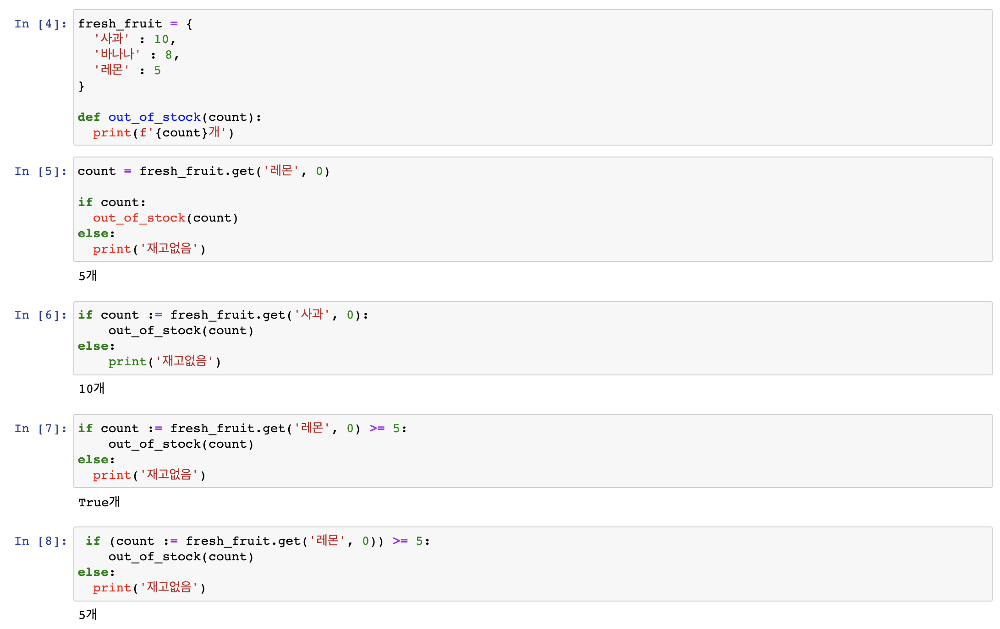

1. 파이썬 답게 생각하기 (better way 6 ~ 10) ¶
Better way 6 . 인덱스를 사용하는 대신 대입을 사용해 데이터를 언패킹하라 ¶
snacks = [('베이컨', 350), ('도넛',240), ('머핀',190)]
// 예제1.
for i in range(len(snacks)) :
item = snacks[i]
name = item[0]
calories = item[1]
printf(f'#{i+1}: {name} 은 {calroies} 칼로리입니다.')
//예제 2.
for rank, (name, calories) in enumerate(snacks, 1):
printf(f'#{rank}: {name} 은 {calroies} 칼로리입니다.')
기억해야 할 내용
- 파이썬은 한 문장 안에서 여러 값을 대입할 수 있는 언패킹이라는 특별한 문법을 제공한다.
- 파이썬 언패킹은 일반화돼 있으므로 모든 이터러블에 적용할 수 있다. 그리고 이터러블이 여러 계층으로 내포된 경우에도 언패킹을 적용할 수 있다.
- 인덱스를 사용해 시퀀스 내부에 접근하는 대신 언패킹을 사용해 시각적인 잡음을 줄이고 코드를 더 명확하게 만들라.
Better way 7. range 보다는 enumerate 를 사용하라. ¶
flavor_list = ['바닐라', '초콜릿', '피칸', '딸기']
for i in range(len(flavor_list))
flavor = flavor_list[i]
print(f'{i + 1} : {flavor}'')
>>>
1: 바닐라
2: 초콜릿
3: 피칸
4: 딸기
it = enumerate(flavor_list)
print(next(it))
print(next(it))
>>>
(0, '바닐라')
(1, '초콜릿')
기억해야 할 내용
- enumerate 를 사용하면 이터레이터에 대해 루프를 돌면서 이터레이터에서 가져오는 원소의 인덱스까지 얻는 코드를 간결하게 작성할 수 있다.
- range에 대해 루프를 돌면서 시퀀스의 원소를 인덱스로 가져오기보다는 enumerate를 사용하라.
- Enumerate 의 두 번째 파라미터로 어디부터 원소를 가져오기 시작할지 지정할 수 있다.(default value : 0)
Better way 8. 여러 이터레이터에 대해 나란히 루프를 수행하려면 zip 을 사용하라. ¶
names = ['Cecilia', '남궁민수', '손정의']
counts = [len(n) for n in names]
print (counts)
>>>
[7, 4, 3]
for name, count in zip(names, counts):
if( count > max_count) :
longest_name = name;
max_count = count;
기억해야 할 내용
- zip 내장 함수를 사용해 여러 이터레이터를 나란히 이터레이션 할수 있다.
- zip 은 튜플을 지연 계산하는 제너레이터를 만든다. 따라서 무한히 긴 입력에도 zip 을 쓸 수 있다.
- 입력 이터레이터의 길이가 서로 다르면 zip은 아무런 경고도 없이 가장 짧은 이터레이터 길이까지만 튜플을 내놓고 더 긴 이터레이터의 나머지 원소는 무시한다.
- 가장 짧은 이터레이터에 맞춰 길이를 제한하지 않고 길이가 서로 다른 이터레이터에 대해 루프를 수행하려면 itertools 내장 모듈의 zip_longest 함수를 사용하라.
Better way 9. for 나 while 루프 뒤에 else 블록을 사용하지 말라 ¶
bad grammar
//break 가 걸리지 않으면 else 구분은 실행된다.
for i in range(3) :
print('Loop' , i)
else:
print('Else block!')
>>>
Loop 0
Loop 1
Loop 2
Else block!
// for 문이 실행되고 if break 가 걸리면 else 문은 실행되지 않는다.
for i in range(3):
print('Loop', i)
if i == 1:
break;
else:
print('Else block!')
>>>
Loop 0
Loop 1
// 한번도 실행되지 않은 for 문 뒤의 else 는 실행된다.
for x in []
print('이줄은 실행되지 않음')
else :
print('For Else Block!')
>>>
For Else Bolck!
기억해야 할 내용
- 파이썬은 for 나 while 루프에 속한 블록 바로 뒤에 else 블록을 허용하는 특별한 문법을 제공한다.
- 루프 뒤에 오는 else 블록은 루프가 반복되는 도중에 break 를 만나지 않은 경우에만 실행된다.
- 동작이 직관적이지 않고 혼동을 야기할 수 있으므로 루프 뒤에 else 블록을 사용하지 말라.
Better way 10. 대입식을 사용해 반복을 피하라. ¶
- 대입식(assignment expression) - 왈러스 연산자(walrus operator)
- a := b
- a 왈러스 b 라고 읽음
- 대입식의 값은 왈러스 연산자 왼쪽에 있는 식별자에 대입된 값
- 대입문이 쓰일 수 없는 위치에서 변수에 값을 대입할 수 있어서 유용
fresh_fruid = {
'사과' : 10,
'바나나', : 8,
'레몬' : 5
}
def out_of_stock(count):
print(f'{count}개')
###
count = fresh_fruit.get('레몬', 0)
if count:
out_of_stock(count)
else:
print('재고없음')
>> 5개
### 한 번만 쓰이는 변수
if count := fresh_fruit.get('사과', 0):
out_of_stock(count)
else:
print('재고없음')
>>> 10개
### 대입식 결과와 비교연산자가 있을 경우 대입식을 괄호로 감싼다.
if count := fresh_fruit.get('레몬', 0) >= 5:
out_of_stock(count)
else:
print('재고없음')
>>> True개
if (count := fresh_fruit.get('레몬', 0)) >= 5:
out_of_stock(count)
else:
print('재고없음')
>>> 5개


기억해야 할 내용
- 대입식에서는 왈러스 연산자(:=) 를 사용해 하나의 식 안에서 변수 이름에 값을 대입하면서 이 값을 평가할 수 있고, 중복을 줄일수 있다.
- 대입식이 더 큰 식의 일부분으로 쓰일 때는 괄호로 둘러싸야 한다.
- 파이썬에서는 switch/case 문이나 do/while 루프를 쓸 수 없지만, 대입식을 사용하면 이런 기능을 더 깔끔하게 흉내낼 수 있다.